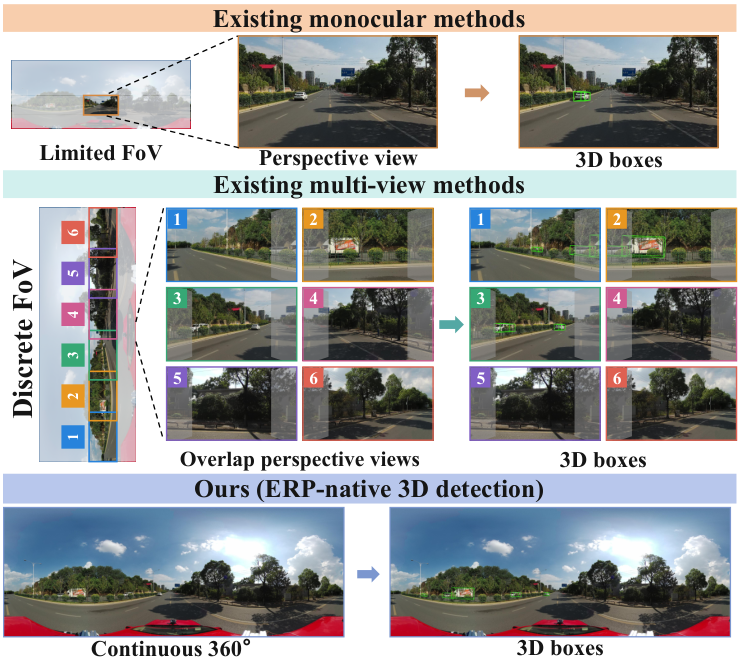

OmniAct3D: Leveraging Foundation Geometry and Evidence-Grounded Reasoning for Panoramic 3D Detection
Adapting perspective-trained vision foundation models to continuous 360° panoramic 3D detection through spherical geometry adaptation, evidence-grounded box refinement, and fine-grained heading estimation.
+2.96 NDS points on Spheriverse over the previous best detector; +24.87 mAP points on PanoMMOcc over the unadapted VFM baseline.
Paper ↗